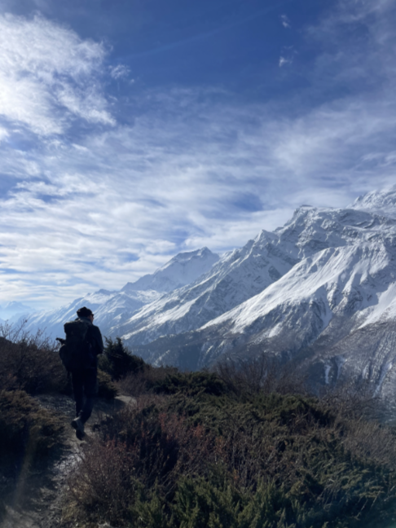
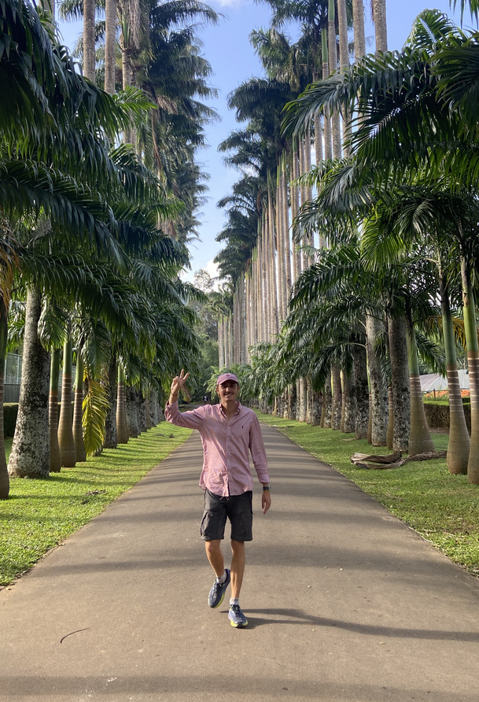
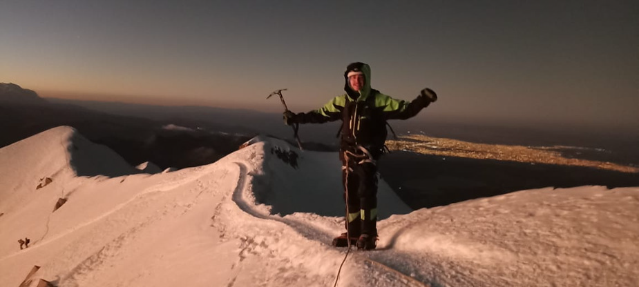
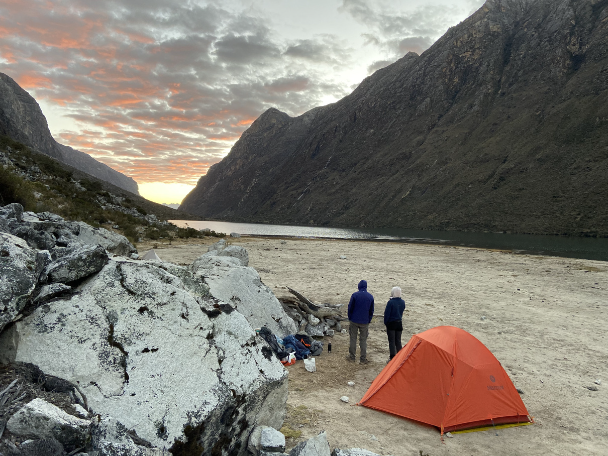
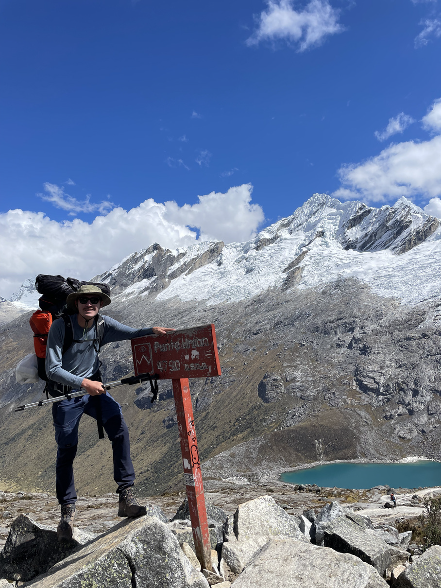
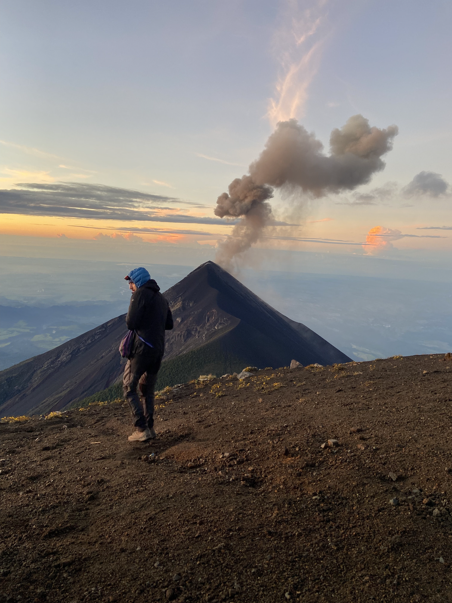
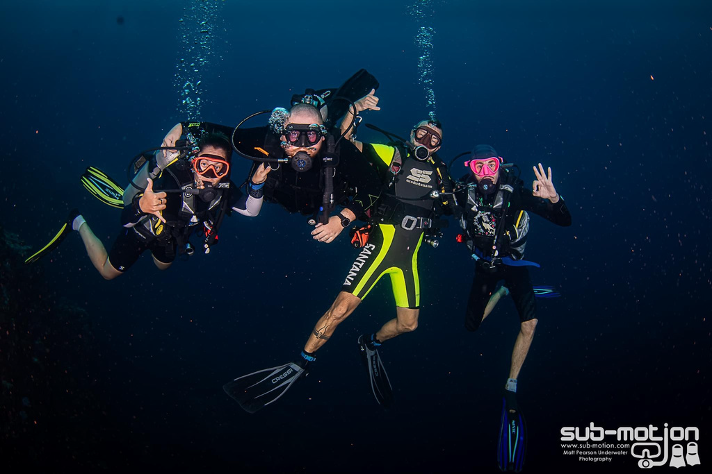
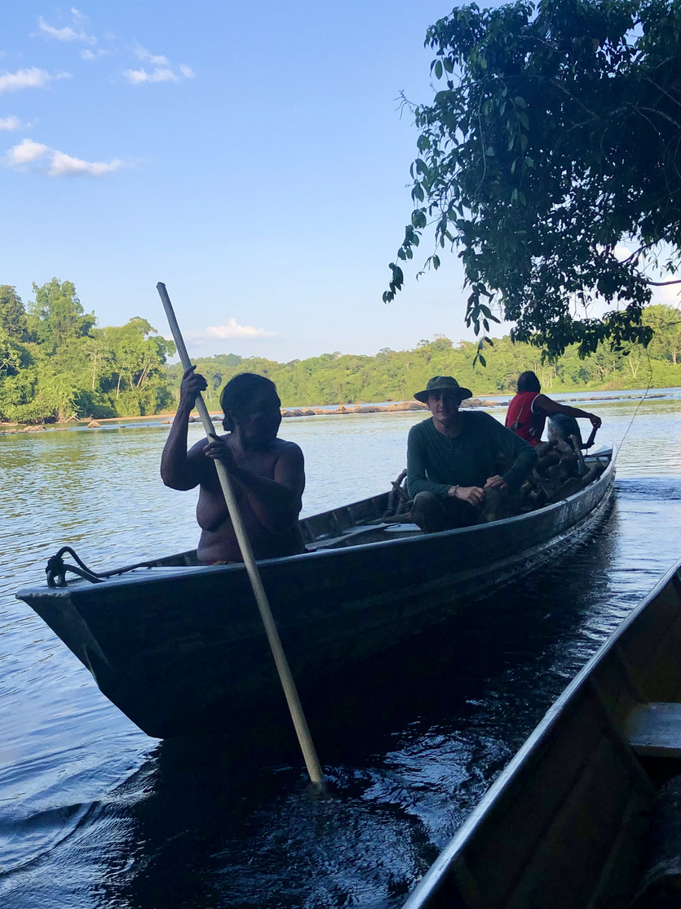
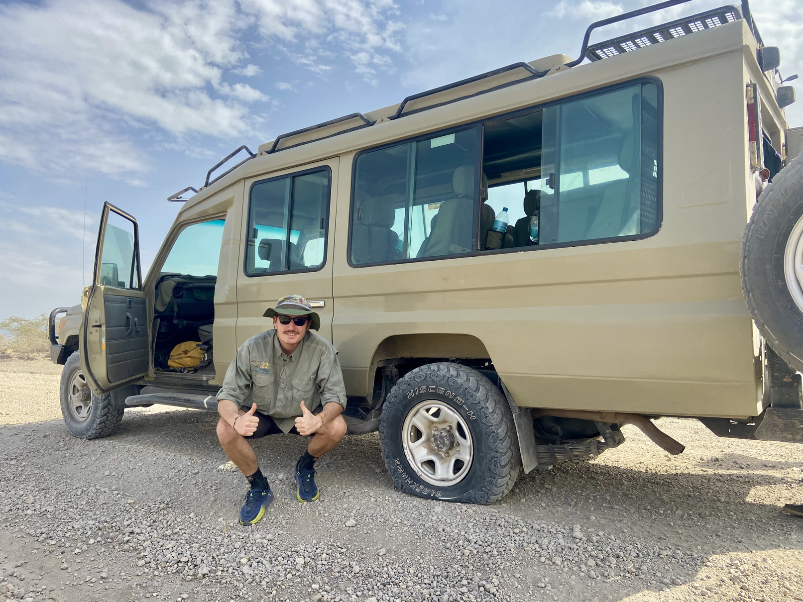

Concevoir une expédition
Itinéraire, logistique, matériel, budget, ravitaillements, démarches administratives : tout est anticipé avant le départ.
Trek · Aventure · Immersion culturelle
Construire l'aventure, anticiper les imprévus, évoluer en sécurité — et mettre cette approche au service des voyageurs.

À propos

Après dix années comme responsable de showroom, je souhaite mettre mes compétences en management, organisation et relation humaine au service de l'accompagnement de groupes.
Mes expériences à l'étranger, mon parcours professionnel et ma pratique du trek m'ont permis de développer des compétences en organisation, coordination, sécurité et relation humaine — que je veux aujourd'hui partager avec des groupes francophones.
Ce que j'apporte
Itinéraire, logistique, matériel, budget, ravitaillements, démarches administratives : tout est anticipé avant le départ.
Lire une carte, anticiper la météo, gérer son énergie sur la durée : l'autonomie au service de la sécurité du groupe.
Analyse permanente des conditions (météo, dénivelé, fatigue) pour ajuster itinéraire, rythme et objectifs en sécurité.
10 ans de management en prêt-à-porter et encadrement SSI Dive Master : fédérer, coordonner, garantir sécurité et qualité.
Forte ouverture culturelle et capacité d'adaptation nourries par de nombreux voyages à travers le monde.
Écoute, adaptation aux besoins de chacun, relation de confiance : chaque voyageur avance à sa juste place.
Parcours professionnel
2022 → aujourd'hui
Organisation de voyages en autonomie. Randonnée : GR10, GR20. Trek : Annapurnas (Népal), Salkantay & Santa Cruz (Pérou). Ascensions : Kilimandjaro (Tanzanie), Huayna Potosí (Bolivie), Acatenango & Fuego (Guatemala), Volcan Barú (Panama).
Février 2024
Formation en centre de plongée : briefings de sécurité, encadrement, travail en équipe internationale, plongées en groupes.
2013 → 2022
Management d'équipe, développement commercial, organisation opérationnelle, sens du service client, prise de décision.
Trek & itinérance
Randonnées longues, treks itinérants et ascensions d'altitude — préparés, portés et menés seul ou en petit comité. La montagne comme école de la sécurité.

Huayna Potosí
Bolivie
Kilimandjaro
Tanzanie
Grand Vignemale
France · alpinisme
Voyages de plusieurs mois en Amérique du Sud, Asie et Australie. Boucle de Hà Giang (Nord Vietnam), 10 jours à moto en autonomie ; road trip moto dans le sud du Vietnam ; road trip 4x4 en Australie (achat, préparation, logistique, plusieurs milliers de km). Itinéraires adaptés en continu selon les rencontres, conditions et opportunités.




Plongée & milieu marin
Plongées
Destinations
SSI Dive Master
Formation SSI Dive Master en Thaïlande : sécurité, organisation, assistance aux sorties.
Volontariat en centre de plongée à Tioman (Malaisie) : accueil des plongeurs francophones, préparation matériel, logistique, entretien, navettes bateaux.
Spots : Raja Ampat, Sipadan, Belize, Philippines, Sri Lanka, Indonésie, Thaïlande, Guadeloupe.
Actions locales : restauration de coraux, nettoyage de plages.
Territoires & culture
Chaque voyage se prépare par des recherches sur l'histoire, la géographie et le patrimoine. Une culture du terrain qui transforme le passage en rencontre.


Bagage
Master 2 Commerce International
Formasup Campus · 2016 · alternance
Licence Responsable Technico-Commercial France & International
Formasup Campus · 2014 · alternance
BTS Négociation Relation Client
Cité scolaire Laure Gatet · 2013 · alternance
SSI Divemaster
Thaïlande · 2023
Permis B
Travaillons ensemble
Agences, tour-opérateurs, accompagnateurs indépendants : discutons de vos itinéraires et de vos besoins d'encadrement.